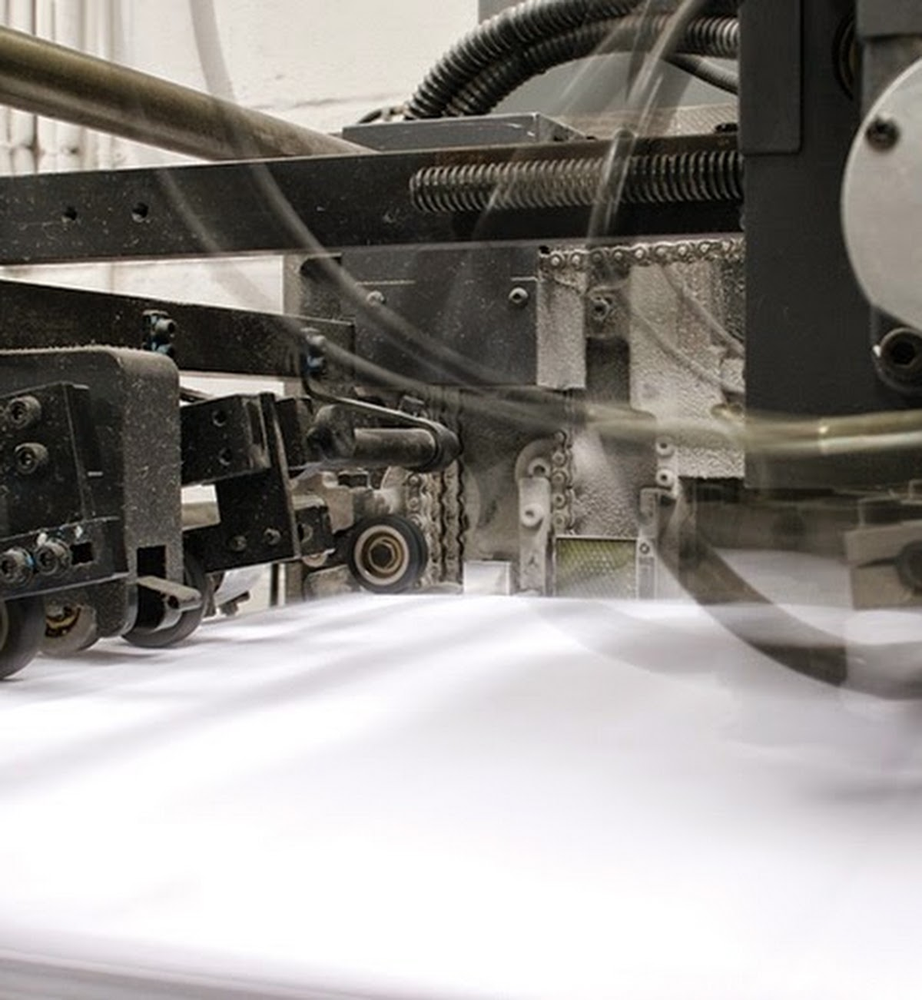

Compliance by design
Carton structures and artwork workflows informed by Health Canada and FDA requirements.
Custom pharmaceutical packaging
Secure, professional packaging for OTC, healthcare and wellness products, supported by regulatory and traceability expertise.
Pharmaceutical capabilities
Regulatory requirements, product protection and professional presentation are coordinated early so packaging can move through approval and production with fewer surprises.
Carton structures and artwork workflows informed by Health Canada and FDA requirements.
Security features and structural options that provide a clear indication of product integrity.
Support for lot coding, expiration dates, serialized identifiers and variable data printing.
Warehousing, inventory coordination and scheduled shipments for multiple SKUs and rollouts.

Production discipline
Goldrich combines structural design, printing, finishing and verification in one production relationship, supporting durability and consistent presentation across healthcare products.
Goldrich has experience with Health Canada and FDA requirements for OTC and healthcare products, including labelling, coding and safety features.
Yes. Options include batch and lot coding, expiration dates, variable data and serialized identifiers for supply-chain visibility.
Yes. Tamper-evident and security features can be incorporated into the structure while preserving accessibility and professional presentation.
Explore other industries
Share the product, quantity, timing and regulatory requirements. Minimum order quantity is 10,000 units.